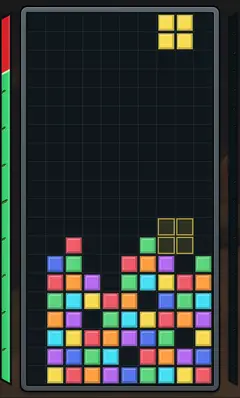
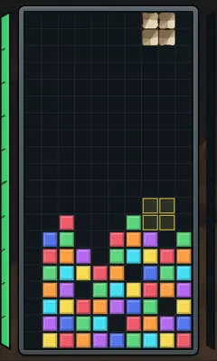
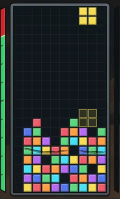
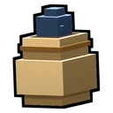
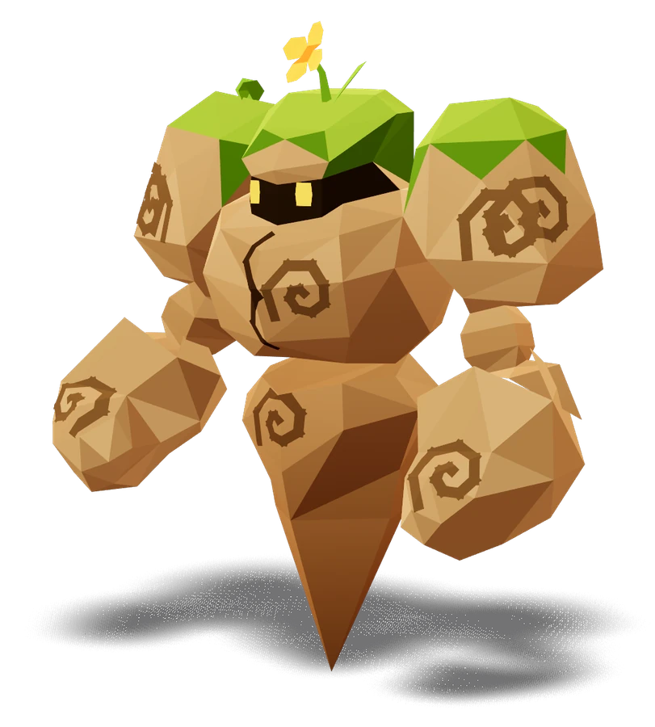

Sandstone Golem
Sandstone Golem is a boss met in Sand Cave. The Sand Cave's stone guardian. He cracks and splits your stack, hides your queue in dust and makes your pieces fall fast.
Attacks
| Attack | Style | What it does | On the board |
|---|---|---|---|
| Fault Line | Melee | Cracks a block deep in your stack. Dig down and clear that row to stun him and hit twice as hard. | |
| Dust Blast | Melee | Hides your NEXT pieces for 8 seconds. HOLD still shows, so keep a good piece in it. |  |
| Heavy Hands | Melee | Your pieces fall fast for 6 seconds. Place each one quickly and keep it simple. |  |
| T-Gap | Melee | Pushes up garbage with a T-shaped slot when your stack is low and a T is coming. T-spin into it to stun him and hit twice as hard. If your stack is too tall, he cracks another block instead. |  |
Each clip is the real fight's board, filmed from the game. It plays once it scrolls into view.
The game's advice: He has four attacks and uses them in turn. Each one needs a different answer, shown below.
Weakness: Triples and Quads hit it 10% harder.
Strategy
How to beat Sandstone Golem: gear, skills and what to do on the board, in a player's words.
Locations
- Sand Cave, in the Red Desert Story (fight 4 of the road)
- the Endless Dungeon's Sand Cave: a round boss; the warden its chest follows
Combat stats
| Where | Health | Hit | Attacks every | Experience |
|---|---|---|---|---|
| Red Desert Story | 2,250 | 15–25 | 7.5s | 560 |
| Endless Dungeon, fight 1 | 3,375 | 23–38 | 5s | 1,400 |
| Endless Dungeon, fight 11 | 3,825 | 24–40 | 4.69s | 1,512 |
| Endless Dungeon, fight 21 | 4,500 | 26–44 | 4.29s | 1,680 |
| Endless Dungeon, fight 41 | 5,850 | 30–50 | 3.75s | 2,066 |
| Dark Endless Dungeon, fight 1 | 4,500 | 30–50 | 3.75s | 2,240 |
| Dark Endless Dungeon, fight 11 | 4,950 | 32–53 | 3.75s | 2,352 |
| Dark Endless Dungeon, fight 21 | 5,625 | 34–57 | 3.75s | 2,520 |
| Dark Endless Dungeon, fight 41 | 6,975 | 38–63 | 3.75s | 2,906 |
Hit is the range before your Armor takes its share. In the Endless Dungeon and its Dark an enemy grows tougher with every round of fights; champions and omens change it further. A kill from fight 25 on, in Onslaught, pays 50 experience on top.
Drops
Each kill rolls its table twice in the Red Desert Story, twice in the Endless Dungeon and three times in its Dark. Every row is rolled on its own, so a kill can pay several.
| Item | Quantity | Rarity | Log |
|---|---|---|---|
 Gold Coin Gold Coin | 160–280 | 60% | |
 Iron Ingot Iron Ingot | 2–4 | 18.35% | |
 Mithril Ingot Mithril Ingot | 1–2 | 18.35% | |
 Coal Coal | 3–6 | 18.35% | |
 Adamantite Ingot Adamantite Ingot | 1–2 | 1/19 | |
 Gilded Draught Gilded Draught | 1 | 1/25 | |
 Magic Ring Magic Ring | 1 | 1/33 | ✓ |
 Treasure Seal Treasure Seal | 1 | 1/39 | ✓ |
 Orichalcum Ore Orichalcum Ore | 1–2 | 1/49 | ✓ |
 Magic Chain Magic Chain | 1 | 1/63 | |
 Perfect Orichalcum Perfect Orichalcum | 1 | 1/299 | ✓ |
 Orichalcum Ingot Orichalcum Ingot | 1 | 1/400 | ✓ |
 Adamantite Ore Adamantite Ore | 2–4 | 13.4% | |
 Minor Healing Potion Minor Healing Potion | 1–2 | 1/11 | |
 Ironbark Tonic Ironbark Tonic | 1–2 | 1/15 | |
 Emergency Ration Emergency Ration | 1–2 | 1/19 | |
 Miner's Compost | 1–2 | 1/19 | |
 Rich Compost Rich Compost | 1 | 1/59 | |
 Adamantite Helmet Adamantite Helmet | 1 | 1/79 | |
 Darkwood Log Darkwood Log | 1 | 1/79 | |
 Lotus Leaves Lotus Leaves | 1 | 1/79 | |
 Riveted Adamantite Armor Riveted Adamantite Armor | 1 | 1/120 | |
 Gambler's Brew Gambler's Brew | 1 | 1/149 | |
 Orichalcum Helmet Orichalcum Helmet | 1 | 1/500 | |
 Orichalcum Buckler Orichalcum Buckler | 1 | 1/600 |
Every kill also rolls
| Item | Quantity | Rarity | Notes |
|---|---|---|---|
| Rare Drop table (The Red Desert) | — | 1/16 | Once a kill, whatever the mode |
 Respec Orb Respec Orb | 1 | 1/1,600 | A run's first kill; rises each kill to 1/533 from the 50th |
 Little Golem Little Golem | 1 | 1/500 | Pet, one of each |
 Gilded Ornament Kit Gilded Ornament Kit | 1 | 1/500,000 | Every kill everywhere |
Rare Drop table (The Red Desert)
One kill in 16 rolls this list once, apart from the enemy's own table. Rare Drops never count toward the Collection Log.
| Item | Quantity | Rarity |
|---|---|---|
| Gold Coin | 300–800 | 1/107 |
| Coal | 40–80 | 1/107 |
| Mithril Ingot | 4–8 | 1/100 |
 Rugged Hide Rugged Hide | 2–4 | 1/133 |
| Adamantite Ingot | 2–3 | 1/133 |
 Ipe Plank Ipe Plank | 2–3 | 1/160 |
 Nettle Fabric Nettle Fabric | 2–3 | 1/200 |
 Duskhide Duskhide | 1 | 1/400 |
| Magic Ring | 1 | 1/800 |
| Magic Chain | 1 | 1/800 |
| Treasure Seal | 1 | 1/1,600 |
| Orichalcum Ingot | 1 | 1/1,600 |
 Darkwood Plank Darkwood Plank | 1 | 1/1,600 |
 Lotus Cloth Lotus Cloth | 1 | 1/1,600 |
Collection Log
Sandstone Golem has a page under ENEMIES in the Collection Log, in its BOSSES section. It lists:
In the game each slot stays hidden until it drops for you.
Gallery



Trivia
Design notes and anything else worth knowing.
Changes
What changed for Sandstone Golem, update by update.
| Enemies | |
|---|---|
| Greenshore Story | Zombie · Slime · Squirrel · Cyclops · Oak Entling · Bandit · Bandit King · Super Zombie · Punchy · Shooty · Bernie · Bandit Elite · Cultist · Cult Leader |
| Red Desert: Dust Bowl | Sand Zombie · Wormling · Desert Worm |
| Red Desert: Sand Storm | Raider · Scrap Warlord |
| Red Desert: Pyramids | Sand Zombie · Mummy · Possessed Sarcophagus |
| Red Desert: Sand Cave | Rockling · Cave Spider · Sandstone Golem |
| Red Desert: Research Station | Sand Veil Cultist · Lesser Cult Leader · The Old Man |
| Red Desert: Hellish Desert | The Unbound |
| Elsewhere | Garbage Man · Slime King |